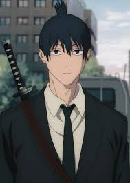

Chainsaw man
| Nombre | Chainsaw Man |
|---|---|
| Tipo | Manga |
| Publicado | 2018 |
| Estado | Proceso |
| Autor | Sakamoto Shinichi |
| Publicado por | Shueisha |
| Género | Acción, Comedia de terror |
Chainsaw Man
Resumen
Cuando su padre murió, Denji se quedó con una deuda enorme y sin forma de pagarla. Sin embargo, gracias a la ayuda de un perro del diablo al que salvó llamado Pochita, Denji puede sobrevivir como cazador de demonios trabajando para la Yakuza. Cuando la mafia traiciona a Denji y un diablo lo mata, Pochita se sacrifica para revivir a su antiguo amo. Ahora Denji ha renacido como una especie de extraño híbrido de diablo y humano. ¡Ahora es Chainsaw Man!
Personajes
Denji
Denji es a la vez descarado e ingenuo como resultado de no poder tener una educación formal y socializar debido a que vive en una pobreza extrema. Su personalidad resulta grosera y dura de una manera casi infantil. Sin embargo, tiene un buen sentido de empatía hacia otras personas, dispuesto a salvar a los que están en peligro tanto como pueda, demostrando que es una persona de buen corazón a pesar de sus defectos. Si bien Denji no posee necesariamente la inteligencia más alta, es capaz de tener ideas inteligentes para derrotar a los demonios, como prenderse fuego y usar la luz emitida para debilitar a Santa Claus lo suficiente como para matarla.
Aki Hayakawa
Aki era un hombre estoico y a veces brusco, pero en realidad era muy bondadoso. Se encariñaba fácilmente con los demás y odiaba ver a la gente, especialmente a sus amigos cercanos, sufrir. Aunque estaba decidido a vengar la muerte de su familia matando al Demonio Arma, no se había vuelto cínico y aún lamentaba la pérdida de sus seres queridos. A pesar de su deseo de venganza, Aki estaba dispuesto a arriesgar su vida para salvar a otros, incluso si eso interfería con sus propios objetivos.
Power

Power es infantil, codiciosa y motivada principalmente por su propio interés. Lucha con confianza cuando cree que va a ganar, pero no duda en huir si se siente superada. Le gusta alardear de su superioridad sobre otros Cazadores de Demonios debido a su condición de Demonio, y no es leal ni a humanos ni a demonios, siempre dispuesta a unirse al bando ganador. Disfruta de las peleas y de mostrar su fuerza, pero es muy egoísta y a menudo abandona tareas difíciles, desviando las consecuencias de sus acciones hacia los demás.